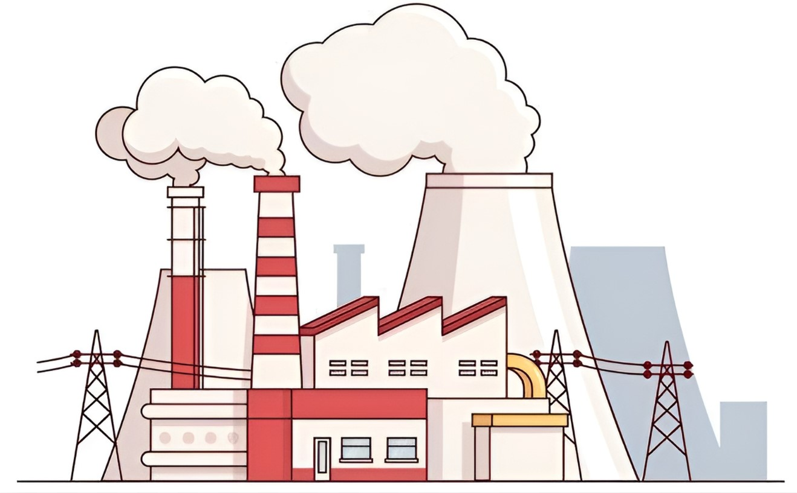
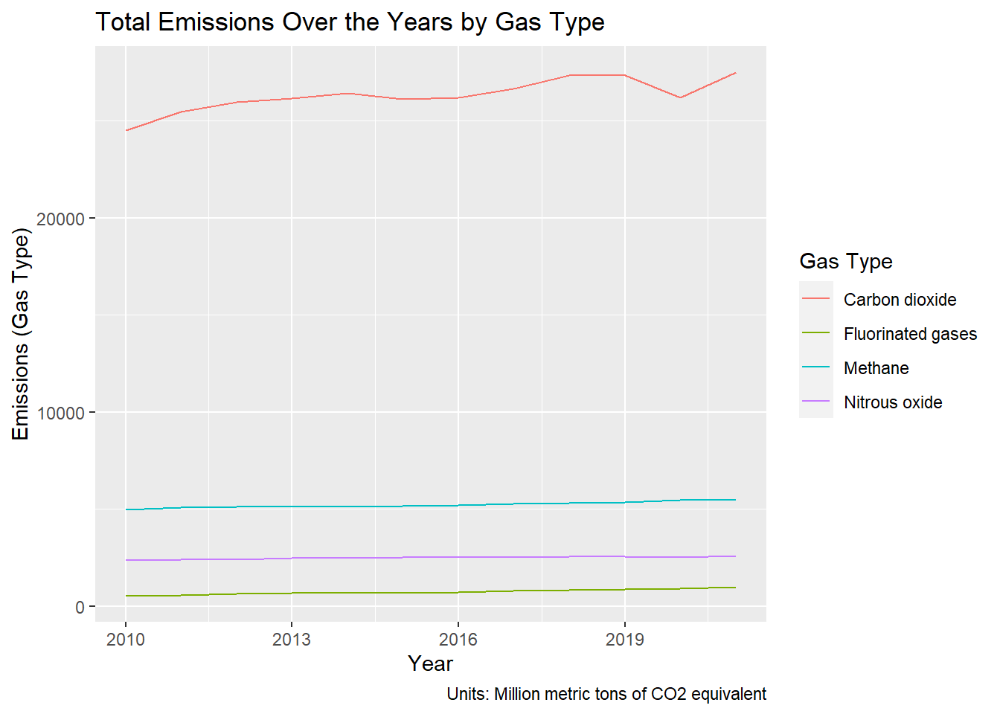

Greenhouse Gas Emissions Trend

Introduction
As concerns about greenhouse gas emissions continue to grow globally, it has become increasingly important to deepen our understanding about the main sources and driving forces behind these emissions. Understanding these factors is crucial in the process of making informed decisions and the development of effective strategies to address the urgent climate crisis.
Our analysis, covering the years from 2010 to 2021, aims to reveal the contributing factors behind greenhouse gas emissions, which are intricately linked to climate change. Our data-driven approach provides us with the insights necessary to make informed decisions and implement comprehensive strategies to address this ongoing environmental challenge, ultimately guiding us towards a more sustainable future.
Data
We will be analyzing Greenhouse Gas Emissions Trends based on the Industry, Region and Gas Types shown in the table below:
| Industry |
|
| Region |
|
| Gas Types |
|
Analysis
In our analysis of greenhouse gas emissions from 2010 to 2021, we’ll be using various data visualization techniques to help us uncover the story hidden within the data. These methods will give us a comprehensive view of emissions trends, relationships, and key contributors.
Before anything can be done, lets clean up the data first!
Time Series Plots:
- Use line graphs to show how greenhouse gas emissions have changed over time (2010-2021) for each of the following categories: Industry, Region, and Gas Types.
1. Industry against Time
If you are interested to see the individual plots, feel free to select the industry of your choice!
Emissions Over the Years by Industry
2. Gas Type against Time

If you are interested to see the individual plots, feel free to select the gas type of your choice!
Emissions Over the Years by Gas Type
3. Region against Time

If you are interested to see the individual plots, feel free to select the region of your choice!
Emissions Over the Years by Region
Bar Plots
1. Gas Type against Industry
From the plots below, we can see how the total emissions of each gas type vary across different industries.
2. Gas Type against Region
From the plots below, we can see how the total emissions of each gas type vary across different regions.